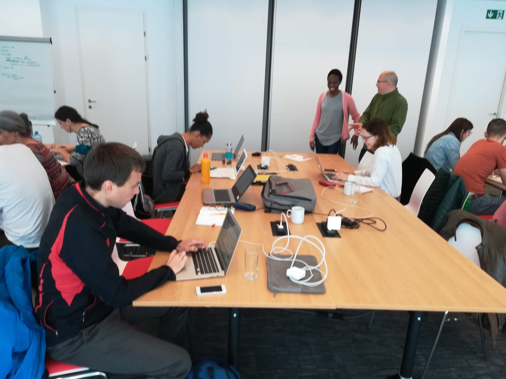

Hilfswerk Österreich is one of Austria’s leading charities. Their
mission is to provide support in overcoming health, family, or social
challenges. They provide services all over Austria, ranging from care
for the elderly, child care, to social living and supermarkets.
Within the framework of their 24-hour care services for persons with
physical disabilities, Hilfswerk Österreich provide a matching service
between patients and live-in care providers. These matchings require
intense care and administrative effort; accordingly, early
cancellations caused by unsuitable combinations are undesirable. The
data4good Hackathon project will examine historical cases, in order to
help improve patient to care-provider matching.
A team of very talented data scientists have decided to help solving this challenge. Their goal during the hackathon is to examine historical cases, in order to get insights on which data features are associated with cancellations. Another goal is interpretability of the results: we love algorithms and models, but we also aim at providing some valuable clues to Hilfswerk.
The data comes from Hilfswerk's 24-Stunden-Betreuung - Visitenblat (caregiver visit reports) The records from pdf forms which resulted in two dataframes containing heterogenious informations about the cases. Each case belongs to one of the two classes (normal or conflict) and has a few to several records in time order. The records include information on service activities that have been done (categorical type) as well as additional information and service evaluation from both parties in the text format.
In other words, the scientists are dealing with a binomial classification problem and aim at predicting contract cancellation based on saved records of normal and conflict cases. Futher challenges:
The team calculated sentiments present in each individual case report. As expected, conflict cases have a lower (unhappier) sentiment than non-conflict cases. Their analysis resulted in several insights: